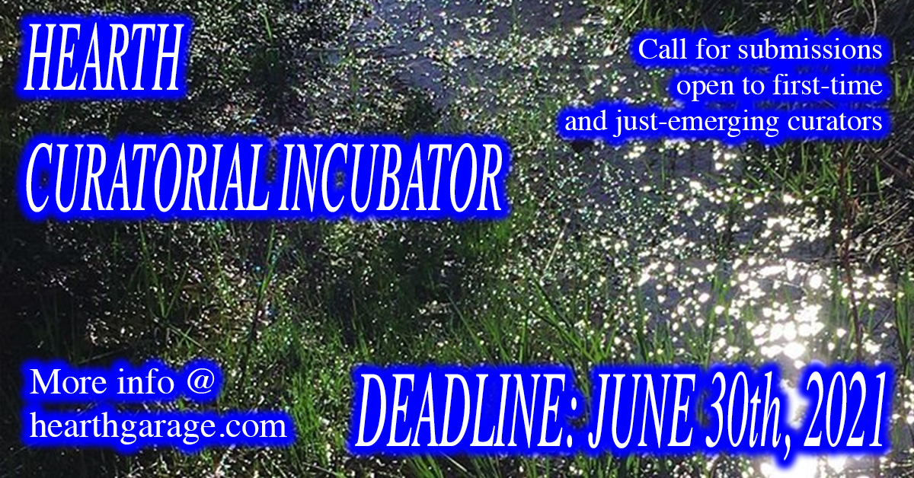

DEADLINE: June 30th 2021

There is a scarcity of opportunities available to individuals and collectives wishing to develop their curatorial practices within gallery spaces. Hearth is looking for first-time and newly emerging curators to organize an exhibition!
Participants in Hearth’s inaugural curatorial incubator will have an opportunity to develop and present a curated exhibition in October 2021. Working directly alongside us at Hearth in all of these capacities, the applicant will:
- Develop a theme for the exhibition
- Lead outreach, facilitate studio visits, and coordinate with participating artists
- Write a text for the exhibition, with the option of producing a publication
- Manage the installation of work
- Present the project to the public
- Develop a plan to reimagine their work in a virtual space
If you’re just starting out in a role as a curator or community organizer, we encourage you to apply.
We are aware of the inequities in compensation of labour that come with opportunities of this nature. As volunteers ourselves, we are interested in other forms of exchange. If your proposal is selected you will receive:
- An honorarium based show budget
- The administrative support / mentorship of Hearth personnel (which includes assistance in grant writing, correspondence and communication, installation, copy editing, publication design, web design, promotional strategies, documentation, etc.)
- Dedicated time in our programming year to host a project online or on site at the gallery
- Assistance facilitating studio visits with arts workers with a curatorial practice
QUALIFICATIONS:
The less experience, the better! The ideal candidate will be a first time curator or someone getting their footing in the role. We are interested in experimental formats and leaps of faith.
Hearth is committed to working towards an anti-oppressive, queer positive environment, and prioritizes applicants that are Indigenous, Black, people of colour, women, LGBTQ2+, people with disabilities, and members other marginalized communities.
The following is a list of recommended documents to include:
1. A proposal describing the project. No idea is too small! We want to see that you believe in the project and are excited by the prospect of seeing it blossom.
2. A few potential artists either for exhibiting OR for visual reference. Don’t worry if you haven’t worked with them yet, their participation does not need to be confirmed at the time of submitting.
3. An artist statement describing your individual / collective practice
4. A C.V. detailing your relevant experiences. This is entirely optional, you don’t need to have had previous experience. We’d just like to get to know you.
As we acknowledge that proposal writing can be an inaccessible process, we have no mandatory requirements for submissions, but please keep in mind that you’re introducing yourself and your project to an uninitiated audience! Hearth will also be accepting oral applications and are happy to set up a meeting with you in order to do so.
SUBMISSION PROCESS
- Please send submissions by e-mail to hearthgarage@gmail.com
- Please compile your documents into a single PDF
- Video can be sent separately using WeTransfer or Dropbox, or links to video material on sharing platforms (Vimeo, Youtube, etc.). Images can be included as an attachment to the email in .jpg format. If you have any questions contact hearthgarage@gmail.com
Disclaimer:
Due to the unpredictability of the pandemic it is difficult to plan with certainty. To ensure the safety of our community, measures must be taken to operate responsibly within public health guidelines. As such, the date listed for the exhibition is tentative and subject to change.